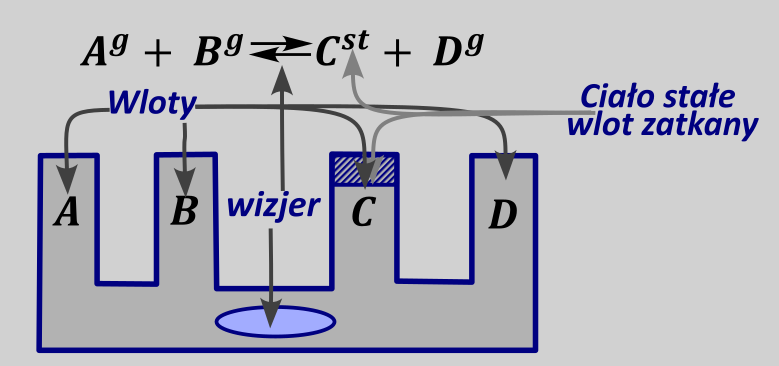
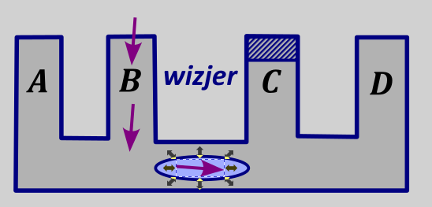
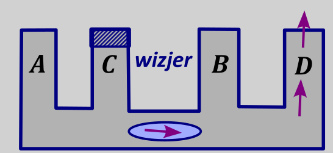
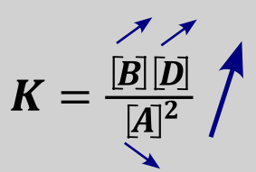

Reguła przekory mówi o tym, w którą stronę przebiega reakcja po zaburzeniu reakcji w stanie równowagi. Czynnikami, mającymi wpływ na położenie stanu równowagi, które analizujemy regułą przekory mogą być na poziomie matury
- dodanie /usunięcie reagentów
- zmiana objętości/ciśnienia/ rozcieńczenie
- zmiana temperatury prowadzenia reakcji
Co analizujemy regułą przekory? Jakie czynniki tutaj analizujemy?
\[\mathbf{A}^{\mathbf{g}}\mathbf{+}\mathbf{B}^{\mathbf{g}}\mathbf{\rightleftarrows}\mathbf{C}^{\mathbf{g}}\mathbf{+}\mathbf{D}^{\mathbf{st}}\]
Stosunek stężeń reagentów dla reakcji, w której osiągnięty został stan równowagi musi zachować wartość stałej równowagi K. Jednocześnie wprowadzenie dodatkowej porcji jednego z reagentów bądź jego usunięcie musi spowodować, iż stosunek stężeń po zmianie będzie różny od wartości stałej równowagi. Możemy obliczyć wartość ilorazu reakcji i porównać tę wartość do stałej równowagi i tym samym przewidzieć, w którą stronę będzie przebiegać reakcja. Np. Podwyższając w powyższej reakcji stężenie reagenta A tym samym w wyrażeniu na \(Q\) podwyższę mianownik (substraty), a licznik (produkty) zostawię jak był. Podwyższając mianownik obniżam wartość całego wyrażenia, więc:
\(Q < K\) → reakcja idzie w prawo.
Inne warianty podwyższanie/ obniżenia ilości jednego z reagentów mogę analizować tak samo np.
Dodajemy produktów → reakcja zachodzi w stronę substratów, bo wartość stałej równowagi musi być zachowana, a dodajemy produktów, które są w liczniku, więc wartość ilorazu rośnie ponad wartość stałej równowagi, więc musimy zwiększyć mianownik (substraty), a zmniejszyć licznik (produkty)
Jedyne reagenty, których nie bierzemy przy analizie ich wpływu na kierunek zachodzenia reakcji to reagenty stałe, gdyż w wyrażeniu na stałą równowagi za wartość ich stężenia wstawiamy jeden, nie ważne ile ich fizycznie jest. Oczywiście ciała stałego musi wystarczyć do osiągnięcia stanu równowagi, to znaczy jeżeli podczas reakcji jego ubywa to musi go być wystarczająco do przeprowadzenia reakcji. Jeżeli jednak jest go za mało to przereagowuje całe, a reakcja nie osiąga stanu równowagi.
Jeżeli mamy problem ze stwierdzeniem, w którą stronę przebiega reakcja możemy to zwizualizować rysując naczynia połączone, każdy z reagentów to oddzielny kolejny wlew , natomiast kierunek przepływu cieczy (zachodzenia reakcji) możemy tylko obserwować przez wizjer, umieszczony na w miejscu, gdzie jest strzałka reakcyjna , pomiędzy substratami i produktami. Jednocześnie zatykamy otwór ciał stałych, gdyż ich stężenie jest niezmienne w trakcie trwania procesu, więc nie możemy przy nich nic „majstrować”

Wówczas dla rozpatrywanej reakcji, np. dodatek B powoduje:

Przesuwanie się równowagi reakcji w prawo, a więc wzrost ilości produktów (obu) i spadek ilości substratów, aż do osiągnięcia stanu równowagi.
Przy zmianie stężeń stała równowagi się nie zmienia.
Ogólnie możemy napisać, iż dla powyższej reakcji:
| Stan równowagi | stała | |
|---|---|---|
| A+ | W prawo | = |
| A- | W lewo | = |
| B+ | P | = |
| B- | L | = |
| C+ | L | = |
| C- | P | = |
| D+ | = | = |
| D- | = | = |
Jednocześnie należy podkreślić, iż używanie za każdym razem ilorazu reakcji jest zbyt czasochłonne, aby za każdym razem go stosować.
Przy zmianie tych czynników zawsze należy patrzeć na ilość miejsca zajmowanego przez reagenty tzn. czy więcej jest substratów czy produktów gazowych (lub ciekłych, jeżeli mamy tylko reagenty w roztworze), w ogóle nie uwzględniamy ciał stałych, bo praktycznie nie zajmują miejsca, zwłaszcza w porównaniu do gazów i nie mamy ich w wyrażeniu na stałą równowagi. Typowa gęstość gazów to \(1 - 10\frac{g}{dm^{3}}\) , a ciał stałych \(0.5 - 10\frac{g}{cm^{3}}\) – ciała stałe zajmują 1000 razy mniej miejsca, więc należy je pominąć.
Zwiększenie objętości układu powoduje, że więcej miejsca musimy wypełnić cząsteczkami, więc potrzebujemy tych cząsteczek więcej. Reakcja więc przebiega w kierunku, w którym jest więcej reagentów gazowych. W praktyce patrzymy z której strony suma współczynników stechiometrycznych jest większa i w tę stronę przebiega reakcja przy zwiększeniu objętości.
Zwiększenie ciśnienie działa o odwrotnie do objętości, gdyż zwiększając ciśnienie zmniejszamy objętość, jest to zgodne z równaniem Clapeyrona:
\[pV = nRT \rightarrow \ p\sim\frac{1}{V}\]
Inaczej, wydaje się, że każdy się bawił strzykawką, zatkanie paluchem wlotu i zassanie ( zwiększenie objętość powoduje, że paluch się zasysa, a więc ciśnienie spada.
Związek ciśnienia z objętością, najłatwiej jest wytłumaczyć na przykładzie sporządzania drinka. Kiedy zwiększam objętość drinka, dolewam coli wtedy zmniejszam jego stężenie. Możemy to również wytłumaczyć wzorami:
\(c = \frac{n}{V}\) , \(p = cRT \rightarrow p\sim c\ i\ p\sim\frac{1}{V} \rightarrow c\sim\frac{1}{V}\)
Podsumowując
Wzrost objętości = spadek ciśnienia = rozcieńczenie = reakcja przebiega w stronę większej ilości reagentów gazowych
Spadek objętości = wzrost ciśnienia = zatężenie = reakcja przebiega w stronę mniejszej ilości reagentów gazowych
Rozważając reakcję:
\[\mathbf{A}^{\mathbf{g}} + \mathbf{2}\mathbf{B}^{\mathbf{g}} \rightleftarrows {\mathbf{2}\mathbf{C}}^{\mathbf{g}} + D^{st}\]
Suma współczynników stechiometrycznych z strony substratów wynosi trzy, z prawej strony wynosi dwa (ciała stałe olewamy).
Wówczas możemy napisać, iż np. zwiększenie objętości powoduje przesunięcie się równowagi w lewo/substratów (w kierunku większej ilości reagentów gazowych), natomiast zwiększenie ciśnienia powoduje przesunięcie się równowagi w prawo/ produktów (mniejszej ilości reagentów gazowych).
Ani zmiana ciśnienia, ani stężenia ani objętości nie zmienia wartości stałej.
Przesunięcie stanu równowagi na skutek zmiany parametrów dla powyższej reakcji można umieścić w tabelce:
| Stan równowagi | Stała | |
|---|---|---|
| V+(p-, c-) | L | = |
| V- (p+, c+) | P | = |
| P+ to zawsze (V-) | P | = |
| p- (V+) | L | = |
| C+ (V-) | P | = |
| c- (V+) | L | = |
Dla reakcji, w której ilość substratów = ilości produktów (gazowych), wówczas objętość zajmowana przez substraty jest taka sama jak przez produkty. Jeżeli zarówno substraty jak i produkty zajmują taką samą objętość wówczas zmiana objętości i parametrów podobnych (ciśnienia, rozcieńczenia układu) nie mają wpływu na stan równowagi, np.
\[2A^{g} + C^{st} \rightleftarrows B^{g} + D^{g}\]
Dla powyższej reakcji opisane parametry (objętość układu, ciśnienie, rozcieńczenie itp.) nie mają wpływu na położenie stanu równowagi, bo mam dwa gazowe reagenty po lewej stronie i dwa po prawej.
Jednocześnie zmiana tych parametrów nie ma wpływu na wartość stałej równowagi.
Parametr, który decyduje o wpływie zmiany temperatury to efekt termiczny reakcji – czy reakcja jest egzotermiczna (reakcja wydziela ciepło, ujemna wartość entalpii \(\mathrm{\Delta}H < 0\) ) czy jest endotermiczna (pochłania ciepło, dodatnia wartość entalpii \(\mathrm{\Delta}H > 0\) ). Wartość entalpii bardzo często jest zapisywana przy reakcji, tak jak podano poniżej:
\[2A^{g} + C^{st} \rightleftarrows B^{g} + D^{g}\ \mathrm{\Delta}H < 0\]
Widzimy, iż entalpia reakcji jest mniejsza od zera \(\mathrm{\Delta}H < 0\) , więc ciepło jest produktem reakcji, więc jest z prawej strony. Reakcję możemy wówczas zapisać w postaci:
\[2A^{g} + C^{st} \rightleftarrows B^{g} + D^{g} + \mathbf{Q}\]
Gdzie \(Q\) oznacza wydzielone ciepło podczas reakcji.
Wydaje mi się, iż najlepiej jest rozpatrywać wpływ zmiany temperatury na położenie stanu równowagi, jako to czy ciepło reakcji jest w danej reakcji substratem (zanika, reakcja endotermiczna) czy produktem (powstaje, reakcja egzotermiczna). Wpływ zmiany temperatury analizuje wtedy jako wpływ zmiany ilości produktu (dla egzotermicznej) lub substratu (dla reakcji endotermicznej). Np. dla powyższej reakcji, w której ciepło jest produktem, wpływ obniżenia temperatury (odbieranie ciepła) należy rozpatrywać jako obniżenie ilości jednego z produktów. Zgodnie z grafem, zabieranie produktu powoduje przesuwanie się stanu równowagi w prawo, a więc wzrost ilości B i D oraz obniżenie ilości A i C .

Zmianę wartości stałej równowagi również można wyprowadzić analizując wpływ zmiany temperatury na zmianę stężeń. W przypadku opisywanej równowagi zmniejszenie temperatury powoduje wzrost stężenia produktów i spadek stężenia substratów, co analizując wyrażenie na stałą równowagi
\[K = \frac{\lbrack B\rbrack\lbrack D\rbrack}{\lbrack A\rbrack^{2}}\]
Daje, iż stężenie reagentów B i D wzrasta, a stężenie A spada, więc licznik wzrasta, a mianownik spada, więc wartość stałej równowagi musi wzrosnąć.

Analogicznie można wyprowadzić cztery warianty
| temperatura |
Reakcja egzotermiczna \(\Delta H < 0\) Ciepło produktem |
Reakcja endotermiczna \(\Delta H > 0\ \) Ciepło substratem |
||
|---|---|---|---|---|
| Stan równowagi | Stała równowagi | Stan równowagi | Stała równowagi | |
| wzrasta | prawo | Spada | lewo | wzrasta |
| spada | lewo | wzrasta | prawo | spada |
Obecność inhibitor i katalizator nie mają wpływu ani na wartość stałej równowagi ani na położenie stanu równowagi, mają wpływ tylko na szybkość ustalania się stanu równowagi. Jednak czasem może być tak, że bez katalizatora ustalenie się stanu równowagi będzie trwało dłużej niż wiek wszechświata.
Czynniki wpływające na położenie stanu równowagi i parametry, które mają wpływ na położenie tego stanu można zebrać w tabelce
| Czynnik | Wpływ na położenie stanu | uwagi |
|---|---|---|
| Zwiększenie stężenia danego reagenta | Przesunięcie się w drugą stronę niż występuje ten reagent | Nie rozważamy ciał stałych |
| Zwiększenie objętości | Przesunięcie się w kierunku większej ilości gazów (większa suma współczynników stechiometrycznych) | Nie rozważamy ciał stałych |
| Zwiększenie ciśnienia | Przesunięcie się w kierunku mniejszej ilości gazów (mniejsza suma współczynników stechiometrycznych) | Nie rozważamy ciał stałych |
| Rozcieńczenie | Przesunięcie się w kierunku większej ilości gazów (większa suma współczynników stechiometrycznych) | Nie rozważamy ciał stałych |
| Zmniejszenie temperatury | Przesunięcie w tę stronę, z której występuje ciepło w równaniu reakcji. | Zmienia się stała (wzrasta dla egzo, spada dla endo |
Wpływ czynników, od których zależy stan równowagi i zależne parametry możemy analizować w obie strony, tzn. jeżeli widzimy że na skutek wzrostu temperatury spada wartość stałej równowagi to reakcja jest na pewno egzotermiczna i w drugą stronę, jeżeli spada wartość stałej równowagi na skutek wzrostu temperatury to reakcja jest egzotermiczna.
Można również analizować parametry przez strzelanie tzn. widząc efektem wzrostu temperatury jest zwiększenie np. stopnia przereagowania, widzimy, że należy rozpatrywać efekt termiczny reakcji (egzo czy endotermiczna). Mamy dwa warianty efektu termicznego, albo jest reakcja egzotermiczna albo endotermiczna. Rozważając, więc zachowanie reakcji egzotermicznej możemy ustalić czy zmienia się ona tak jak opisano, jeżeli w takim razie wpływ jest zgodny z przewidywaniami wiemy, że trafiliśmy, więc reakcja jest egzotermiczna. Jeżeli natomiast efekt jest przeciwny, to drogą eliminacji reakcja z całą pewnością jest endotermiczna.
W zadaniach często proszą o argumentację. Argumentujemy wymieniając cztery rzeczy:
Formułka
Zgodnie z reguła przekory, zmiana parametru (zwiekszenie ciśnienia; objętości itp) dla reakcji (tutaj piszesz to że ilość moli gazowych produktow wieksza/mniejsza niz substratów lub egzo /endo) powoduje przesuniecie równowagi reakcji w stronę substratów /produktów i tym samym wzrost spadek wydajnosc stopnia przeregowania czy innego paramatru któru Cię interesuje.
Jednocześnie należy podkreślić, iż, każde zadanie mówiące o przesunięciu stanu równowagi jest zadaniem z reguły przekory, nie ważne, czy odwołuje się ono do ogólnej stałej równowagi, czy też do stałych równowagi, które mają nazwę, takie jak stała dysocjacji kwasowej \(K_{a}\) stała dysocjacji zasadowej \(K_{b}\) stała rozpuszczalności \(K_{so}\) czy jakakolwiek inna stała.